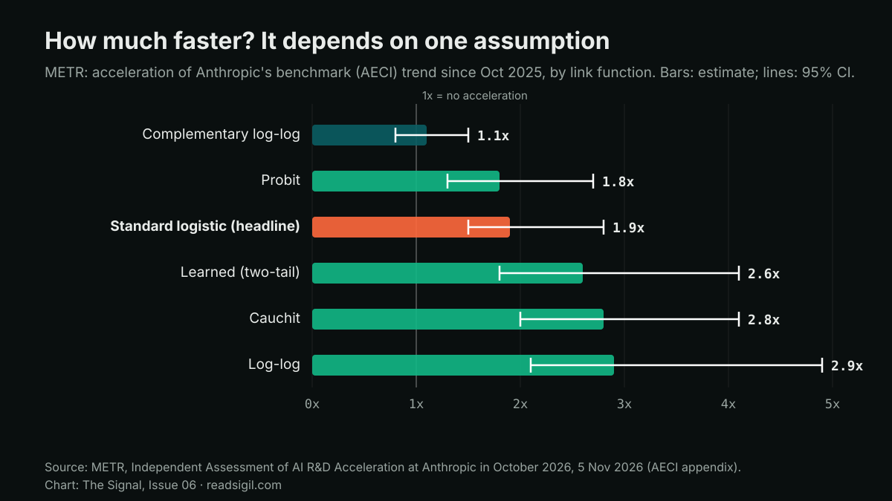

The Signal · Issue 06 · Frontier Models
An outside evaluator says Anthropic's progress has roughly doubled. Most of its best evidence is redacted
METR spent eleven weeks with Anthropic's internal data and estimates that capability growth is running at about twice its earlier pace, mostly because AI is helping with the research. Change one modelling assumption and the estimate runs from 1.1x to 2.9x, and the public cannot check the rest.

Facts are attributed and linked to their sources. The analysis and opinions are the author's own.
What it found
METR, an independent AI evaluation group, published its assessment of AI R&D acceleration at Anthropic on 5 November. From 12 August to 29 October its staff had what it calls high-access to Anthropic's internal data: benchmark scores for unreleased models, training compute, staff surveys and about 15 interviews. METR says it took no payment from Anthropic.
Its main conclusion is that, as of October 2026, Anthropic is "likely improving the capabilities of their models on well-specified tasks at around twice the rate" it did between March 2024 and October 2025. On AECI, Anthropic's version of the Epoch Capabilities Index, scores have grown at 1.9 times the earlier rate since October 2025, with a 95% confidence interval of 1.5 to 2.8 times. METR is confident that faster growth in training compute is not the cause. It guesses that "perhaps ≈80%" of the current acceleration is due to AI, and it found no clear bottleneck that would stop further compounding over the next 12 months, though it says its view of bottlenecks "changed several times".

The caveats are unusually blunt. METR writes that Anthropic "redacted a majority of the evidence we found most informative", and that as a result "the public has to rely on METR's judgment much more than would be ideal". Anthropic said the redactions were aimed at information that could help other developers. Anthropic also removed a planned check of how its compute is split between capabilities and safety partway through the engagement, before METR reached any conclusions on it. The chart above shows another limit: the headline estimate depends on an assumption about how hard benchmark tasks are, and reasonable alternatives give anything from 1.1x to 2.9x.
Why it matters
Issue 05 reported Anthropic's own warning in its prospectus that it might notice an AI-driven speed-up only after it had happened. A week later the first high-access outside review says the speed-up is probably already here. That is a real step for outside scrutiny of a frontier lab. It is also a test case for a problem every bank knows from its own suppliers: an assurance report is only as good as its scope.
An assurance report is only as good as its scope. Read the exclusions before the conclusion.
For a financial firm that buys frontier models, I would treat METR's report the way an audit committee treats a supplier's controls report with scope exclusions. Read what was excluded before reading the opinion. Here the exclusions are significant: most of the key evidence, and the compute-allocation check. If a supplier's products are getting better about twice as fast as before, model versions will also change faster. Contracts should pin versions and give notice before a model is retired. Validation teams should plan for more frequent re-testing, not an annual cycle.
What I'd watch
- Whether Anthropic revisits the cancelled compute-allocation check, and whether METR is allowed to publish it.
- Whether Anthropic decides, under its own Responsible Scaling Policy, that it has crossed its threshold for AI-accelerated research.
- Whether other frontier labs agree to similar high-access reviews, and on what redaction terms.
Sources
- Independent Assessment of AI R&D Acceleration at Anthropic in October 2026 METR, 5 Nov 2026 (updated 6 Nov).